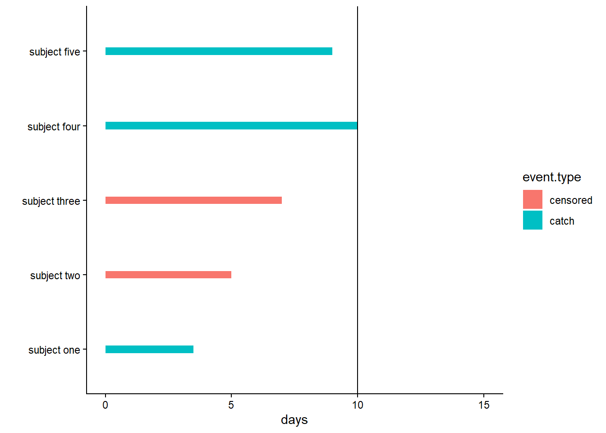
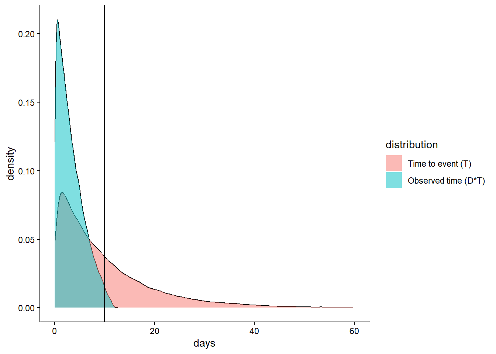
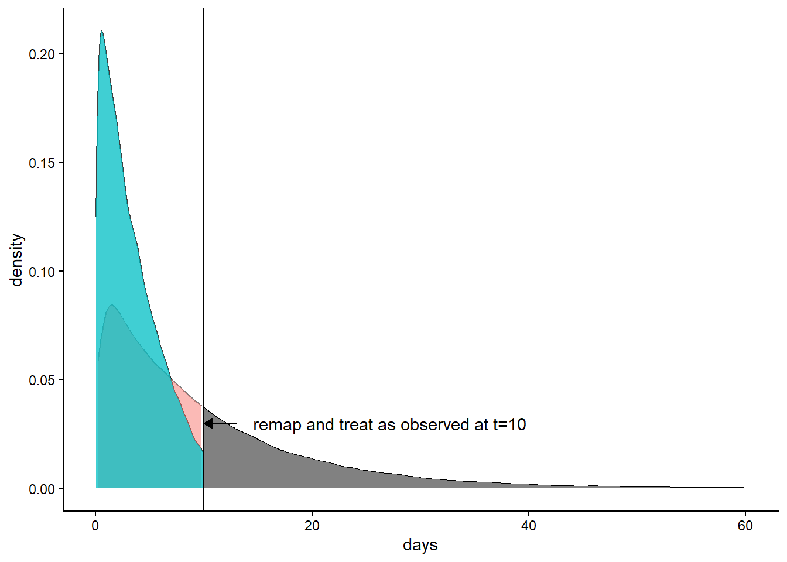
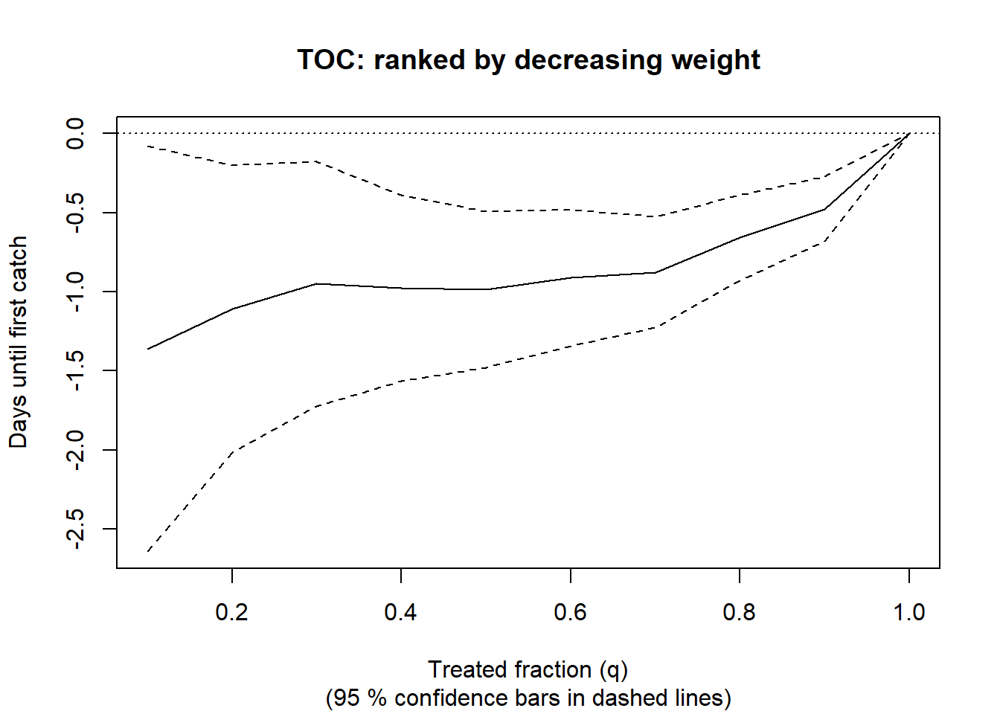

library(grf)事件发生时间数据下的因果森林
Causal forest with time-to-event data · grf 官方教程中译
来源：R 包 grf 官方教程
survival.Rmd（原文渲染版），作者 Julie Tibshirani、Susan Athey、Erik Sverdrup、Stefan Wager 等，采用 GPL-3 许可。 本页为中文翻译，非原文；按 GPL-3 保留原作者署名与许可证，并标明这是修改（翻译）后的版本。 译自 grf 2.6.1（源码修订5bee99b）。 页内代码与图表由本站以 R 4.4.3 + grf 2.6.1 重新执行生成，因随机种子与包版本差异，数值可能与原站略有出入。
本文面向初学者，简要介绍像 GRF 这样的非参数估计量如何在生存分析场景中灵活地估计处理效应，同时对删失过程和生存过程尽量不做假设。第一部分基本介绍右删失数据，以及估计平均生存时间时会遇到的问题。第二部分展示 GRF 如何利用 sample.weights 构造基于 IPCW 的 causal_forest，并说明函数 causal_survival_forest 提供的更强大的估计方法。
右删失数据
 假设我们想估计 \(E[T]\)：海獭幼崽平均要多久才能抓到第一只猎物。我们开车前往距斯坦福校园约一小时车程的 Moss Landing，给若干同龄幼崽装上一个装置，它会告诉我们幼崽是否抓到了海胆、扇贝、螃蟹等。受经费和时间限制，研究在 10 天后结束。在这 10 天里，测量装置也可能随机失效（电池可能停止工作——它们在 12 天后彻底耗尽，装置也可能发生故障等）。这意味着对部分个体，我们观测到的不是它们抓到猎物的时间，而是装置停止工作的时间，也就是它们被删失的时刻：\(C\)。下图展示了这类数据大致的样子，黑色的线表示研究结束。
假设我们想估计 \(E[T]\)：海獭幼崽平均要多久才能抓到第一只猎物。我们开车前往距斯坦福校园约一小时车程的 Moss Landing，给若干同龄幼崽装上一个装置，它会告诉我们幼崽是否抓到了海胆、扇贝、螃蟹等。受经费和时间限制，研究在 10 天后结束。在这 10 天里，测量装置也可能随机失效（电池可能停止工作——它们在 12 天后彻底耗尽，装置也可能发生故障等）。这意味着对部分个体，我们观测到的不是它们抓到猎物的时间，而是装置停止工作的时间，也就是它们被删失的时刻：\(C\)。下图展示了这类数据大致的样子，黑色的线表示研究结束。

个体二和个体三：它们的测量装置发生故障，于是退出研究，我们只知道在最后一次测量时它们还没有抓到任何东西。个体一、四、五在前 10 天里抓到了第一只猎物。
这种设定描述的是事件发生时间（time-to-event）研究中一类典型的数据收集过程，称为右删失。我们观测不到个体的事件时间 \(T_i\)，而是观测到 \(Y_i\)，其定义为
\[\begin{equation} Y_i = \begin{cases} T_i & \text{若} \, T_i \leq C_i \\ C_i & \text{否则} \end{cases} \end{equation}\]
同时还观测到事件指示变量 \(D_i\)
\[\begin{equation} D_i = \begin{cases} 1 & \text{若} \, T_i \leq C_i \\ 0 & \text{否则.} \end{cases} \end{equation}\]
在我们的例子中，个体一、四、五都经历了事件（\(D=1\)），而个体二和个体三没有（\(C=0\)）。由于在生存分析场景中发生的事件往往是死亡，事件时间 \(T\) 常被称为失效时间（failure times）。
下面用一个模拟的玩具例子把问题讲具体。设幼崽抓到第一只猎物所需的时间服从速率为 \(0.1\) 的指数分布，即 \(T \sim \textrm{Exp}(0.1)\)。设测量装置在其寿命期内任一时刻发生故障的可能性相同，即删失概率服从均匀分布 \(C \sim U(0, 12)\)。如果把观测到的事件 \(D\cdot T\) 的分布以及 \(T\) 的分布画出来，大致是这样：

从这张图立刻可以看出一点：我们必须修改自己的估计目标（estimand）。实际上无法估计 \(T\) 的均值，因为它的密度一直延伸到 60 天以上，而我们的研究在第 10 天就结束了。我们能估计的是一个截断均值，称为限制平均生存时间（restricted mean survival time，RMST），定义为
\[E[\min(T, h)] = E[T \land h],\] 其中 \(h\) 是截断参数（在 GRF 包中叫 horizon）。如果取 \(h=10\)，从图上可以看到 \(E[T \land h]\) 是有定义的，因为直到 \(t=10\) 天我们都能观测到事件（蓝色曲线）。把新的截断生存时间记为 \(\hat T = T \land h\)。这一截断还意味着事件指示变量要随之更新：在时刻 \(h\) 仍处于跟踪中的样本，无论是否被删失，都视为在时刻 \(h\) 观测到了事件，因为我们知道它们到时刻 \(h\) 为止一定没有经历事件。把它记作 \(\hat D = \max(D, \, 1\{T\geq h\})\)。图像如下：

从这张图可以明显看出，只用观测到的事件无法估计 \(E[\hat T]\)，我们必须把删失考虑进来，否则估计就会有偏。图中两条密度曲线是重叠的，在直到 \(h\) 的所有区域都有相当大的质量，这意味着只要知道删失概率，就可以用逆概率加权给观测到的事件加大权重，从而恢复出 \(E[\hat T]\) 的无偏估计。定义删失概率 \(P[C > \hat T \,|\, \hat T] = E[\hat D \,|\, \hat T]\)。如果把观测到的事件按 \(1 / E[\hat D \,|\, \hat T]\) 加权，就得到（利用迭代期望法则）：
\[\begin{equation*} \begin{split} & E\left[\frac{\hat D \hat T}{E[\hat D \,|\, \hat T]}\right] \\ &= E\left[ E\left[\frac{\hat D \hat T}{E[\hat D \,|\, \hat T]} \,\big|\, \hat T \right]\right] \\ &= E\left[\frac{\hat T}{E[\hat D \,|\, \hat T]} E[\hat D \,|\, \hat T]\right] \\ &= E[\hat T]. \end{split} \end{equation*}\]
下面的代码片段用一个玩具例子来说明：
n <- 100000
event.time <- rexp(n, rate = 0.1)
censor.time <- runif(n, 0, 12)
Y <- pmin(event.time, censor.time)
D <- as.integer(event.time <= censor.time)
# Define the new truncated Y and updated event indicator
horizon <- 10
Dh <- pmax(D, Y >= horizon)
Yh <- pmin(Y, horizon)
observed.events <- (Dh == 1)
censoring.prob <- 1 - punif(Yh[observed.events], 0, 12) # P(C > T)
sample.weights <- 1 / censoring.prob
mean(pmin(event.time, horizon)) # True unobserved truncated mean
#> [1] 6.33776
mean(Yh[observed.events]) # Biased
#> [1] 4.076917
weighted.mean(Yh[observed.events], sample.weights) # IPC weighted
#> [1] 6.367093本节说明，把 causal_forest 用于右删失数据的一种办法是删失逆概率加权（inverse probability of censoring weighting，IPCW）。在进入后面关于 CATE 估计的段落之前，还可以指出一个纯粹机械性的重要事实：为了得到稳定的估计，我们希望 \(P[C_i > T_i]\) 不要太低，因为它太低意味着样本权重会爆炸。从密度图直观来看，我们希望把阈值设在仍有“相当大”概率观测到事件的位置；如果尾部很薄，估计任务就更难。
CATE 估计与右删失数据
继续沿用开头描述的那个虚构实验设定，不过这次设想我们把海獭幼崽随机分成两组：处理组（\(W=1\)）和对照组（\(W=0\)）。处理组接受捕猎训练，我们认为这能帮它们更有效地抓到猎物。对照组不做任何处理。我们还收集了一些个体层面的协变量 \(X\)，比如 \(X_1\)=海獭体型等。我们关心的是在给定协变量的条件下结局（RMST）的期望差异，定义为：
\[\tau(x) = E[T(1) \land h - T(0) \land h \, | X = x],\] 其中 \(T(1)\) 和 \(T(0)\) 是对应两种处理状态的潜在结果。要估计它，除了用观测数据做 CATE 估计时的标准识别假设（无混杂性/可忽略性 和 重叠性）之外，我们还需要额外的条件。
上一节的例子已经讲清楚，那里的删失机制是完全随机的（电池和测量装置的失效）。这是一个关键假设，我们要求：
- 可忽略删失：在给定处理和协变量的条件下，删失与生存时间独立，\(T_i \perp C_i \mid X_i, \, W_i\)。
回头看上一节的密度图，就能体会第二个识别假设是什么。我们看到，要让限制均值可识别，就需要在研究期内有一定的机会观测到事件，这一点由 horizon 参数 \(h\) 刻画。第二个假设正是把这个要求写了出来：
- 正性：每个个体都有一定概率被观测到事件，即存在某个 \(\eta_C > 0\)，使得 \(P[C_i < h \, | X_i, \, W_i] \leq 1 - \eta_C\)。
继续沿用第一节那个简化的例子，我们模拟下面的设定：在 t=10 天后停止收集样本，处理是随机分配的，并且 \(\tau(X)\) 依赖于第一个协变量 \(X_1\)。
n <- 700
p <- 5
X <- matrix(runif(n * p), n, p)
colnames(X) <- c("size", "fur.density", "x3", "x4", "x5")
W <- rbinom(n, 1, 0.5)
horizon <- 10
event.time <- pmin(rexp(n, rate = 0.1 + W * X[, 1]), horizon)
censor.time <- runif(n, 0, 12)
Y <- round(pmin(event.time, censor.time), 1)
D <- as.integer(event.time <= censor.time)带样本权重的因果森林
本节展示如何用估计出来的样本权重，把 causal_forest 用于 IPCW 估计。大多数 GRF 估计量都有一个可选的 sample.weights 参数，它会在 GRF 算法的所有步骤（重新标记/分裂/预测）中被考虑进去。我们先用 survival_forest 估计删失过程 \(P[C_i > t \, | X_i = x, W_i = w]\)，再从中取出相应的删失概率 \(P[C_i > \hat T_i \, | X_i = x, W_i = w]\)。在我们的例子里，删失概率“容易”估计：它们都是均匀的。但很多实际应用中的删失模式要复杂得多，比如可以合理地设想海獭幼崽的体型会影响删失概率——体型更大的幼崽也许能把测量装置绑得更牢，比体型小的幼崽更不容易弄坏装置。用 GRF 的 survival_forest 非参数地估计 \(P[C_i > t \, | X_i = x, W_i = w]\)，让我们不必对此做任何假设。
sf.censor <- survival_forest(cbind(X, W), Y, 1 - D)
sf.pred <- predict(sf.censor, failure.times = Y, prediction.times = "time")
censoring.prob <- sf.pred$predictions
observed.events <- (D == 1)
sample.weights <- 1 / censoring.prob[observed.events]注意：做逆概率加权时，通常最好画一下权重的直方图，看看稳定性如何。回头看模拟数据，我们还通过四舍五入把事件时间离散化了：这样做是因为训练生存森林时要在由所有不同事件时间构成的网格上估计生存曲线，网格过密在统计精度上带来的好处很小，却要付出额外的计算成本（可选参数 failure.times 就内置了这一功能）。
把以上内容合起来，我们在所有观测到事件的样本上训练一个因果森林，并传入相应的样本权重。因为我们知道这项研究是随机化的、两组分配概率相同，所以还可以直接给出已知的倾向评分 W.hat \(=E[W_i \, | X_i = x] = 0.5\)：
cf <- causal_forest(X[observed.events, ], Y[observed.events], W[observed.events],
W.hat = 0.5, sample.weights = sample.weights)
average_treatment_effect(cf)
#> estimate std.err
#> -4.745934 0.491739ATE 是负的，说明捕猎训练让海獭幼崽比对照组更快抓到第一只猎物。也就是说，估计出来的处理效果是正面的。
因果生存森林（CSF）
前一种方法有两个缺点：
- 它依赖估计出来的删失概率，而 IPCW 类估计量通常对这些概率的估计误差不稳健。
- 它只用到观测到事件的样本。如果很多个体被删失，这意味着效率损失。
函数 causal_survival_forest 实现的方法借鉴了生存分析文献中关于删失稳健估计方程的思路（Robins et al., 1994, Tsiatis, 2007），从而缓解了这两个缺点。具体做法是：取（完整数据下的）因果森林估计方程 \(\psi^{(c)}_{\tau(x)}(T, W, ...)\)（即“R-learner”），再借助生存过程与删失过程的估计 \(P[C_i > t \, | X_i = x, W_i = w], \, P[T_i > t \, | X_i = x, W_i = w]\)，把它变成删失稳健的估计方程 \(\psi_{\tau(x)}(Y, W, ...)\)（“\(...\)”表示其他的冗余参数）。这个“正交”估计方程的好处是：只要生存过程和删失过程中有一个设定正确，估计就是一致的。当我们想用随机生存森林这类现代机器学习工具来估计它们时，这一点非常有利。更多细节见因果生存森林的论文。
我们指定 target = "RMST"，并给定 t=10 天的 horizon 来做估计：
csf <- causal_survival_forest(X, Y, W, D, W.hat = 0.5, target = "RMST", horizon = 10)
average_treatment_effect(csf)
#> estimate std.err
#> -4.3136116 0.2486059这里的标准误比上一节要小，因为与因果森林不同，CSF 并非只使用观测到事件的样本。（注意：运行该命令时你可能会看到警告，说有些估计出的删失概率小于 0.2。在本例中这没有问题，CSF 只是比较保守——如前所述，我们的估计方法要除以这些概率。）
我们可以用 best_linear_projection 估计一个线性的效应修饰度量，可以看到水獭的体型影响显著：对体型更大的幼獭，捕猎训练的效果更强：
best_linear_projection(csf, X)
#>
#> Best linear projection of the conditional average treatment effect.
#> Confidence intervals are cluster- and heteroskedasticity-robust (HC3):
#>
#> Estimate Std. Error t value Pr(>|t|)
#> (Intercept) -0.51799 1.00054 -0.5177 0.60482
#> size -4.31787 0.90276 -4.7830 2.11e-06 ***
#> fur.density -1.64467 0.85832 -1.9162 0.05576 .
#> x3 -0.92173 0.83811 -1.0998 0.27181
#> x4 -0.73406 0.88210 -0.8322 0.40560
#> x5 -0.16570 0.83810 -0.1977 0.84333
#> ---
#> Signif. codes: 0 '***' 0.001 '**' 0.01 '*' 0.05 '.' 0.1 ' ' 1我们可以按水獭体重画出 TOC 曲线，来考察异质性如何随某个协变量变化。
rate <- rank_average_treatment_effect(csf, X[, "size"])
plot(rate, ylab = "Days until first catch", main = "TOC: ranked by decreasing weight")
# Estimate of the area under the TOC
rate
#> estimate std.err target
#> -0.9667595 0.2476909 priorities | AUTOC其他估计目标：生存概率
CSF 还可以用来估计生存概率之差。通过参数 target = "survival.probability" 使用这一选项，对给定的 horizon \(h\) 估计：
\[\tau(x) = P[T(1) > h \, | X = x] - P[T(0) > h \, | X = x].\]
这一扩展可以在上一节描述的估计框架下完成。本文余下部分给出一般设定的细节。设 \(y(\cdot)\) 是一个确定性函数，满足：
- 有限时限：结局变换 \(y(\cdot)\) 存在一个最大时限 \(0 < h < \infty\)，使得对所有 \(t \geq h\) 都有 \(y(t) = y(h)\)。
于是 CATE 可以定义为 \(\tau(x) = E[y(T(1)) - y(T(0)) \, | X = x]\)。限制平均生存时间对应的结局变换是 \(y(T) = T \land h\)，生存函数对应的结局变换是 \(y(T) = 1\{T > h\}\)。如前所述，这一设定意味着我们只需考虑时间 \(h\) 之前发生的事件。也就是说，在 \(h\) 之后才被删失的样本可以当作在 \(h\) 处被观测到：既然知道他们在更晚的时刻还“活着”，那么在 \(h\) 时刻必然也活着。由此得到新的“有效”事件指示变量：
- 有效事件指示变量：\(D^h_i = D_i \lor 1\{Y_i \geq h\}\)。
这个一般设定还让我们直观地看出：什么时候 CSF 的估计方法相对 IPCW 有效率上的优势——就是数据中有很多样本在 \(h\) 之前被删失的时候。IPCW 方法会丢掉这些样本，而 CSF 会用它们做更高效的估计。
延伸资源
参考文献
Cui, Yifan, Michael R. Kosorok, Erik Sverdrup, Stefan Wager, and Ruoqing Zhu. Estimating Heterogeneous Treatment Effects with Right-Censored Data via Causal Survival Forests. Journal of the Royal Statistical Society: Series B, 85(2), 2023. (arxiv)
Robins, James M., Andrea Rotnitzky, and Lue Ping Zhao. Estimation of Regression Coefficients When Some Regressors are not Always Observed. Journal of the American Statistical Association 89(427), 1994.
Sverdrup, Erik, and Stefan Wager. Treatment Heterogeneity with Right-Censored Outcomes Using grf. ASA Lifetime Data Science Newsletter, January 2024. (arxiv)
Tsiatis, Anastasios A. Semiparametric Theory and Missing Data. Springer Series in Statistics. Springer New York, 2007.
Xu, Yizhe, Nikolaos Ignatiadis, Erik Sverdrup, Scott Fleming, Stefan Wager, and Nigam Shah. Treatment Heterogeneity with Survival Outcomes. Chapter in: Handbook of Matching and Weighting Adjustments for Causal Inference. Chapman & Hall/CRC Press, 2023. (arxiv)